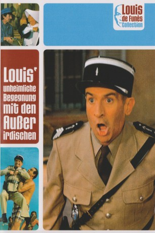

#4774 Louis' unheimliche Begegnung mit den Außerirdischen
Alternativ: The Troops & Aliens (Englischer Titel)
 
 IMDB-Wertung: 6.2 / 10
IMDB-Wertung: 6.2 / 10  Metascore: 0
Metascore: 0 
Wachtmeister Cruchot beobachtet, wie Außerirdische in Saint-Tropez landen. Natürlich erklärt man ihn erst mal für verrückt. Doch Cruchot lässt sich nicht beirren. Mit wahren Pieksschlachten versucht der Wachtmeister, die Identität der Außerirdischen festzustellen, die in jede gewünschte menschliche Gestalt schlüpfen können. Schon bald kommt er auf ein Geheimnis der Fremden: Sie sind aus Blech.
Jahr: 1979
Dauer: 91 Minuten
FSK: 6
Land: Frankreich Studio: TobisTonspuren:
Untertitel:
Auflösung: 1080p (1808x1080) Größe: 6676 MB
Genre: Komödie, Krimi, Sci-Fi
Regisseur: Jean Girault
Drehbuch: Pea Fröhlich
Soundtrack:
Darsteller:
 Louis de Funès als Le maréchal des logis-chef Ludovic Cruchot
Louis de Funès als Le maréchal des logis-chef Ludovic Cruchot Michel Galabru als L'adjudant Jérôme Gerber
Michel Galabru als L'adjudant Jérôme Gerber Jacques François als Le colonel de gendarmerie
Jacques François als Le colonel de gendarmerie Lambert Wilson als L'extra-terrestre qui parle avec Beaupied , uncredited
Lambert Wilson als L'extra-terrestre qui parle avec Beaupied , uncredited- Maurice Risch als Le maréchal des logis Beaupied
- Jean-Pierre Rambal als Le maréchal des logis Taupin
- Guy Grosso als Le maréchal des logis Gaston Tricard
 Michel Modo als Le maréchal des logis Jules Berlicot
Michel Modo als Le maréchal des logis Jules Berlicot- France Rumilly als Soeur Clotilde
 Jean-Roger Caussimon als L'évêque
Jean-Roger Caussimon als L'évêque- Mario David als Le voleur du bidon d'huile
- Maria Mauban als Joséfa Cruchot
- Madeleine Delavaivre als Soeur képi Gerber
- Micheline Bourday als Madame Cécilia Gerber
- Jacqueline Jefford als La soeur à la carrure de rugbyman
- René Berthier als Berthier - l'adjoint du colonel
 Henri Génès als Le patron du restaurant 'Le Cabanon'
Henri Génès als Le patron du restaurant 'Le Cabanon'- Fulbert Janin als Bonneval
- Marie Pillet als
- Carlo Nell als Le reporter
- Jean-Paul Schneider als
- Jeffrey Kime als Le second extra-terrestre de Cabanon
- Jacques Gheusi als
- André Badin als
- Pierre Repp als Le garagiste
- Antoine Marin als L'automobiliste verbalisé
- Marco Perrin als Le maire de Saint Tropez
- Annet als Une extra-terrestre séductrice , uncredited
- Serge Brasseur als L'athlète de la plage , uncredited
- Rika Hofmann als Une extra-terrestre séductrice , uncredited
- Kate als La deuxième Suédoise , uncredited
- Toni Moor als L'Américaine , uncredited
- Percival Russel als Johnny , uncredited
- Simonetta als La première Suédoise , uncredited
Datei: X:\Person\Louis de Funès\Louis' unheimliche Begegnung mit den Außerirdischen (1979, FSK6, 1808x1080).mkv seit 15.11.2016
Festplatte: HD Collection-7+mehr(A-Z)+Person
 Es gibt insgesamt 33 Filme in der Gruppe 'Person\Louis de Funès'
Es gibt insgesamt 33 Filme in der Gruppe 'Person\Louis de Funès'